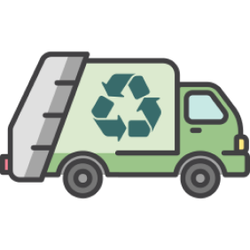
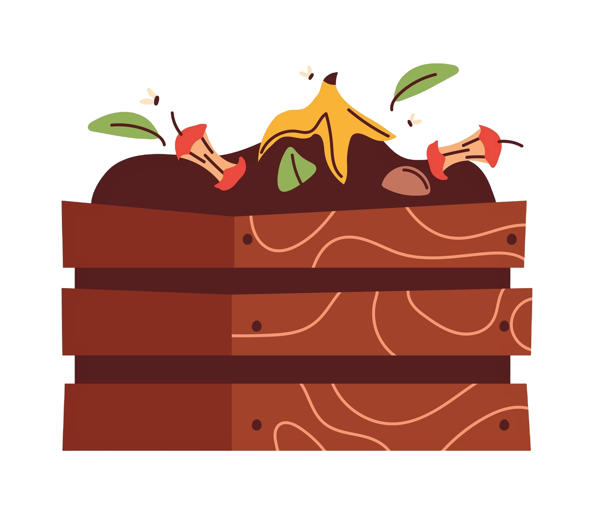
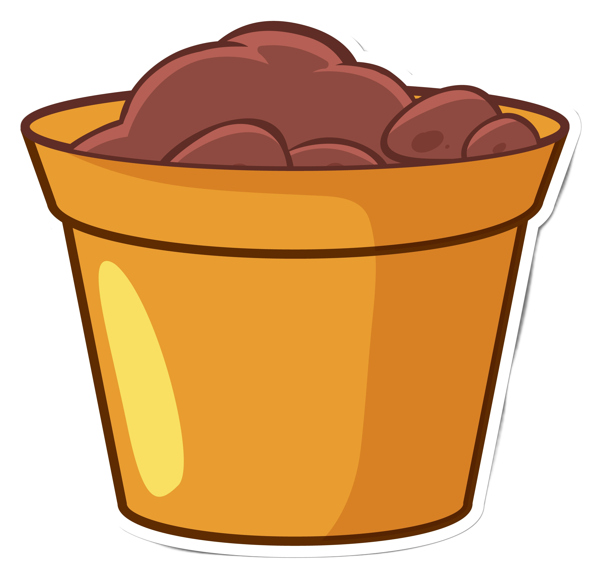
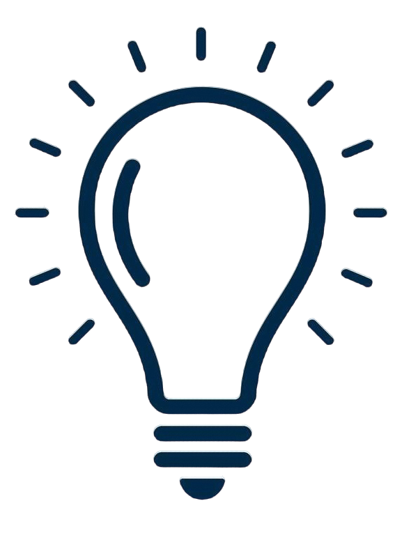

Reciclagem
Um superpoder para salvar o planeta!
Sabias que muitos materiais, como papel,
plástico, vidro e metal, podem ser reciclados?
Isso significa que eles podem ser transformados
em coisas novas! Quando não reciclamos, o lixo
vai parar a aterros e polui a natureza.

O que podes fazer?


Coloca o papel no contentor azul.
Por que devemos reciclar?
Sabias que uma garrafa de plástico leva centenas de anos para desaparecer da
natureza? Reciclar plástico, metal e vidro ajuda a proteger o ambiente e
economizar recursos. Podemos transformá-los em novos brinquedos e garrafas,
por exemplo. Recicla e dá-lhes uma nova vida!
🔌 Reciclagem de Lixo Eletrônico
Telefones, computadores e pilhas são lixo eletrônico. Se não os
reciclarmos corretamente, podem libertar substâncias tóxicas no
ambiente. Os aparelhos tecnológicos contêm materiais que podem
ser reaproveitados, como metais preciosos. Leva o lixo eletrónico
para um ponto de reciclagem e contribui para a produção de novos
telemóveis e dispositivos eletrónicos!
Clica na imagem e descobre o que podes fazer!


♻️ Lixo Biodegradável e Reutilização de Óleo
Restos de frutas e verduras tornam-se fertilizantes naturais se forem
separados do lixo comum. Chama-se a isso compostagem! E o óleo de
cozinha usado? Não se deita na sanita porque polui a água. Ele pode
ser reciclado para produzir sabão ou combustível. Incrível, não é?
Crescimento da Planta com Lixo Biodegradável 🌱
(Mete o lixo organico no contentor de lixo biodegradavel)




💧 Combate ao Desperdício de Água
A água é essencial, mas não é infinita.
Pequenas mudanças fazem uma grande diferença! Fecha a torneira
enquanto escovas os dentes, aproveita a água da chuva para regar
as plantas e verifica fugas nos encanamentos.
Sabias que uma torneira a pingar pode desperdiçar até 5 litros
de água por dia? Pequenas atitudes fazem grandes diferenças!
Clica nas torneiras para fechá-las antes que a água acabe! ⏳
💡 Redução do Desperdício de Luz
Apagar as luzes ao sair do quarto e desligar aparelhos economiza
energia e dinheiro. Isso ajuda a natureza, porque menos energia
precisa ser gerada. Durante o dia aproveita a luz solar, é de
graça e não polui!
Evita o desperdício de energia!

Energia desperdiçada: 0 segundos